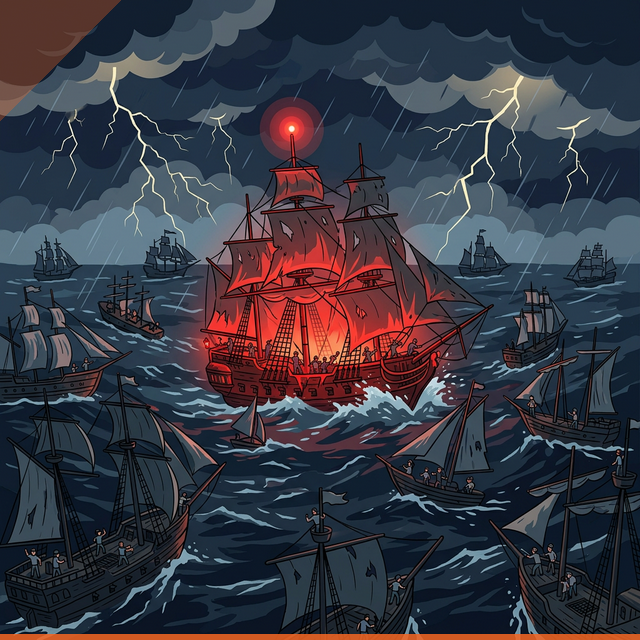

Từ một Thuyền Trưởng đơn độc điều khiển cả hạm đội,
đến mô hình phân quyền 3 tầng — nơi mỗi con tàu đều có người lái lèo vững vàng.

Khi một người cố gắng điều khiển lực lượng hạm đội gồm nhiều con tàu với đông đảo thủy thủ — bão tố là điều không thể tránh khỏi.

Bị cuốn vào quá nhiều cuộc họp, chưa biết cách ủy quyền. Thường xuyên rơi vào trạng thái kiệt sức — vừa phải đảm bảo delivery vừa phải tạo động lực cho team.
Giữa SDM và PL tồn tại một "khoảng cách vô hình" khiến việc giao tiếp trở nên khó khăn. SDM thiếu tin tưởng, không tạo đủ sức ảnh hưởng cho PL.
Đội ngũ PL với năng lực không đồng đều, không có thời gian coaching. SDM không có thời gian để đào tạo và phát triển lực lượng kế cận.
Mô hình Đô Đốc – Thuyền Trưởng – Thủy Thủ: tận dụng sức mạnh của tầng giữa để tăng sức ảnh hưởng mà không cần quản lý vi mô.
Chiến lược tổng thể, định hướng hạm đội, quyết định lớn
Vận hành từng con tàu, quản lý thủy thủ đoàn, báo cáo lên Đô Đốc
Thực thi nhiệm vụ, phối hợp trong đội, phát triển kỹ năng
✨ SDM có thể tăng sức ảnh hưởng đến toàn bộ members mà không cần phải trực tiếp họp hành vi mô — qua đòn bẩy của các PL.
Chuẩn Hóa & Xây Dựng Niềm Tin
Cần hiểu rõ năng lực PL, xóa bỏ khoảng cách vô hình giữa SDM và PL, thiết lập cơ sở phân quyền rõ ràng để đặt đúng người vào đúng dự án.
Dùng mô hình 9-box, Skill-Will để đánh giá đội ngũ PL hiện tại. Lập ma trận ghép điểm mạnh từng PL với yêu cầu dự án.
Định nghĩa rõ ranh giới: SDM lo chiến lược, PL lo vận hành. Chuẩn hóa JD, KPI và quy trình báo cáo Hourensou.
Tổ chức họp Vision Alignment và 1-1 để chia sẻ tầm nhìn, thiết lập sự cởi mở và tin cậy giữa SDM—PL.
Output: Bản đồ nhân sự rõ ràng, hệ thống KPI minh bạch và bắt đầu tạo dựng được niềm tin.
Bản đồ nhân sự (Matrix Mapping) xác định rõ thế mạnh/yếu của 10 PL.
Bảng phân định rõ ranh giới trách nhiệm giữa SDM – PL – Member.
Bộ chỉ số đo lường minh bạch và quy trình báo cáo Hourensou thống nhất.
Sự đồng thuận về tầm nhìn mới; xóa bỏ khoảng cách vô hình ban đầu.
Danh sách PL được “đặt đúng chỗ” dựa trên ma trận năng lực đã đánh giá.
Trao Quyền, Đào Tạo & Coaching
PL cần được trang bị kỹ năng để không bị sốc áp lực, đồng thời SDM cần giảm tải các công việc sự vụ.
Breakdown task, trao quyền phù hợp với năng lực từng PL.
Coaching 1-1 định kỳ, đặt câu hỏi để PL tự giải quyết vấn đề. Workshop kỹ năng quản lý.
SDM truyền thông điệp qua PL. Công khai ủng hộ quyết định PL trước team để xây uy tín.
SDM rút khỏi daily meeting, chuyển sang Dashboard, KPI và báo cáo nhanh.
Output: PL nắm vững kỹ năng, bắt đầu điều hành dự án. SDM được giảm tải họp hành, chỉ quản lý tổng thể.
SDM nắm bắt sức khỏe 10 dự án qua thông số mà không cần dự họp Daily.
Danh sách các task vận hành cụ thể được chuyển giao cho PL quản lý trực tiếp.
PL tự đưa ra giải pháp cho vấn đề thay vì chờ SDM quyết định.
Bộ quy chuẩn về cách quản lý team và giải quyết xung đột nội bộ cho 10 PL.
Member công nhận uy tín của PL; SDM chính thức rút khỏi các quyết định vi mô.
Thông điệp chiến lược của SDM được PL truyền tải hiệu quả xuống 100 members.
SDM tập trung vào WHY và WHAT — PLs tập trung vào HOW, WHO, WHERE, WHEN.
Tối Ưu Hóa, Vận Hành Phân Tầng & Kế Cận
Đưa hệ thống vào vận hành độc lập, kéo đồng đều năng lực của toàn bộ PL và chuẩn bị nhóm nhân sự dự phòng.
PL chủ động vận hành dự án. SDM mở rộng phạm vi trao quyền, chỉ tham gia các điểm chạm quan trọng (Customer, KPT, Sprint Review).
Tổ chức các buổi chia sẻ kinh nghiệm chéo giữa các PL để kéo đồng đều năng lực.
Hướng dẫn PL dùng 9-Box Grid tìm kiếm "Key members" và "Sub-PLs", tạo hệ thống kế thừa nhiều tầng.
Theo dõi qua chỉ số vận hành hàng tháng (KPI dự án, phản hồi 1-1). Rà soát tổng thể qua EES, CSS và survey định kỳ để tinh chỉnh.
Output: Hệ thống tự vận hành ổn định khi không có SDM, có sẵn đội ngũ PL mới dự phòng.
PL làm chủ hoàn toàn khâu vận hành; SDM chỉ xuất hiện tại các điểm chạm chiến lược (Customer, Sprint Review).
Các buổi “Success Stories” giúp thu hẹp khoảng cách năng lực và kinh nghiệm giữa 10 PL.
Xác định các “Sub-PLs” và “Key members” qua mô hình 9-Box để đảm bảo tính kế thừa.
Kết quả khảo sát (EES, CSS, KPI) về mức độ hài lòng của Member và Khách hàng để tinh chỉnh mô hình.
PL được quyền tham gia vào các quyết định quan trọng hơn như quản lý cost, ngân sách dự án, hoặc hợp đồng.
Mỗi hành trình đều có rủi ro. Chuẩn bị kỹ càng là chìa khóa để hạm đội vượt qua mọi sóng gió.
SDM có xu hướng chỉ tin tưởng/giao việc cho các PL cũ, "hợp gu" — tạo sự bất công và bỏ sót nhân tài.
Dùng Data, KPI khách quan và khung năng lực chuẩn để đánh giá thay vì cảm tính.
PL cảm thấy áp lực quá mức khi nhận quyền mà chưa đủ kỹ năng; Member không phục PL; hoặc PL lạm quyền.
Lộ trình ủy quyền tăng dần. Đào tạo kỹ năng quản lý. SDM trao quyền công khai và không can thiệp trực tiếp.
Giao quyền sai người. Thông tin truyền đạt SDM → PL → Member bị "tam sao thất bản".
Chuẩn hóa kênh thông tin. Giám sát chặt giai đoạn đầu. Thiết lập "checkpoint" can thiệp kịp thời.